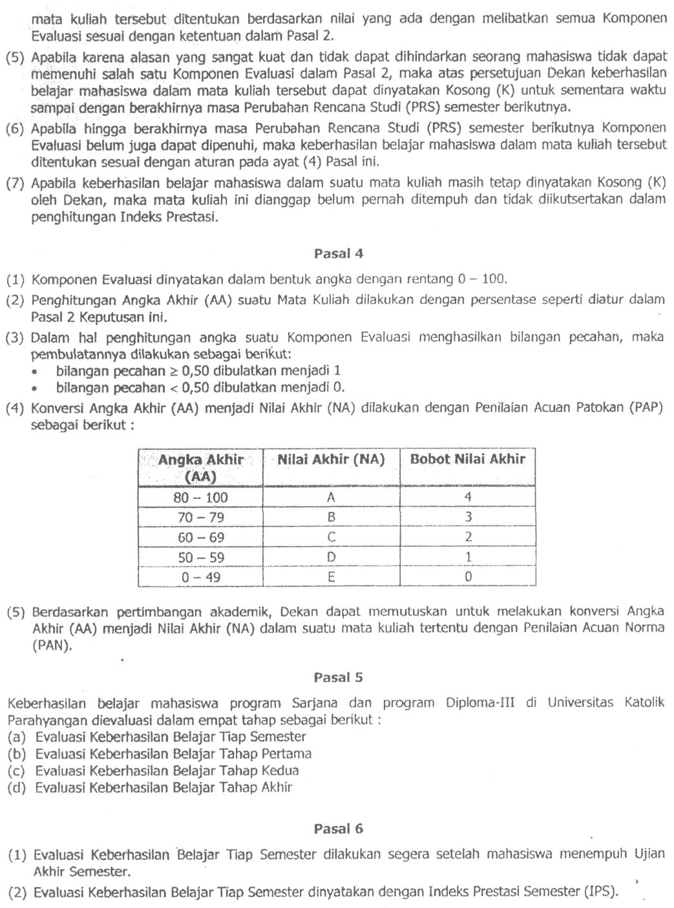
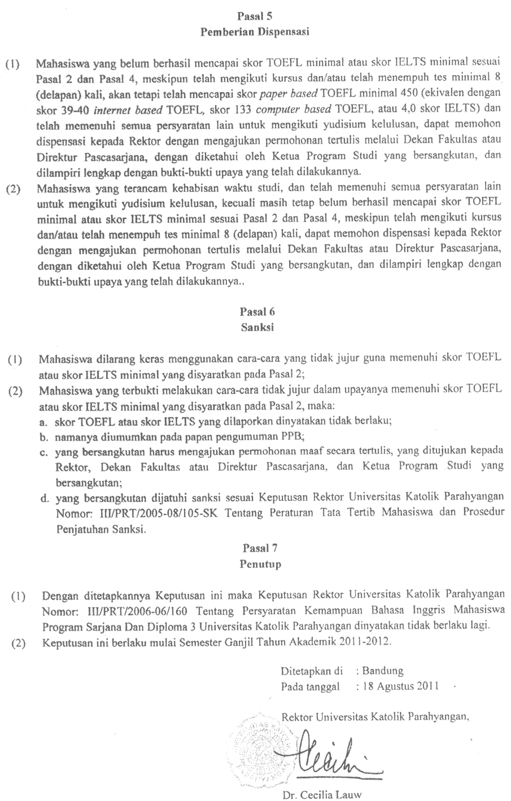
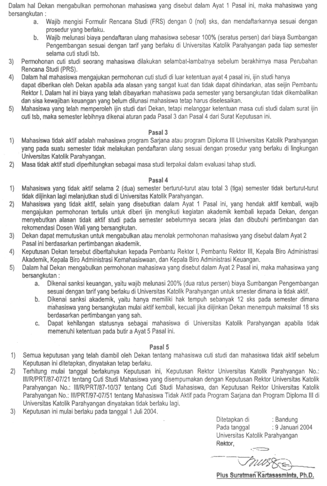
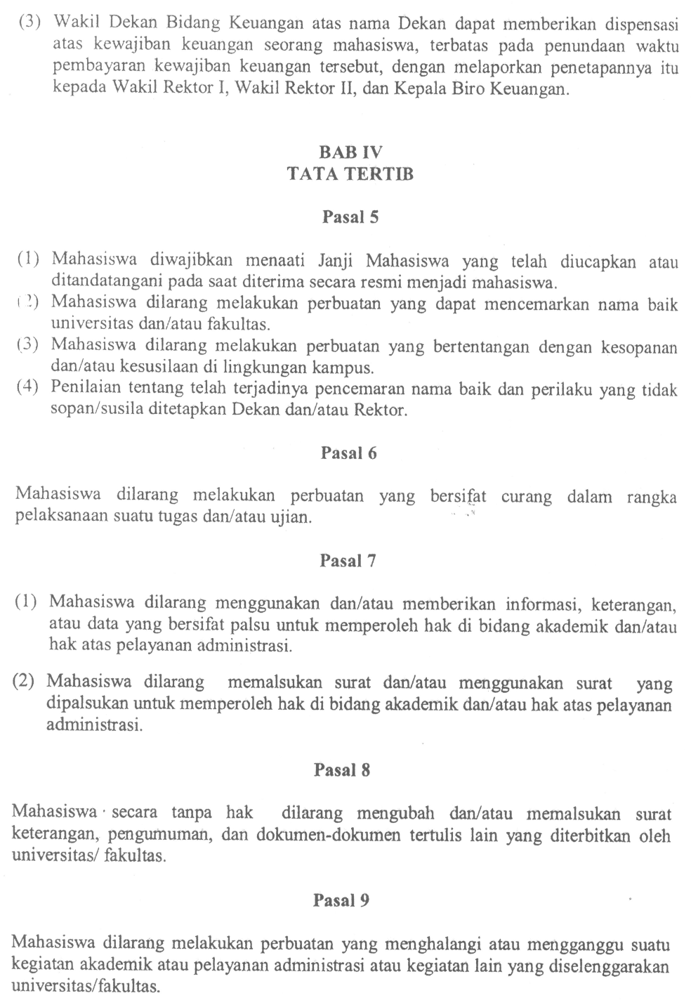
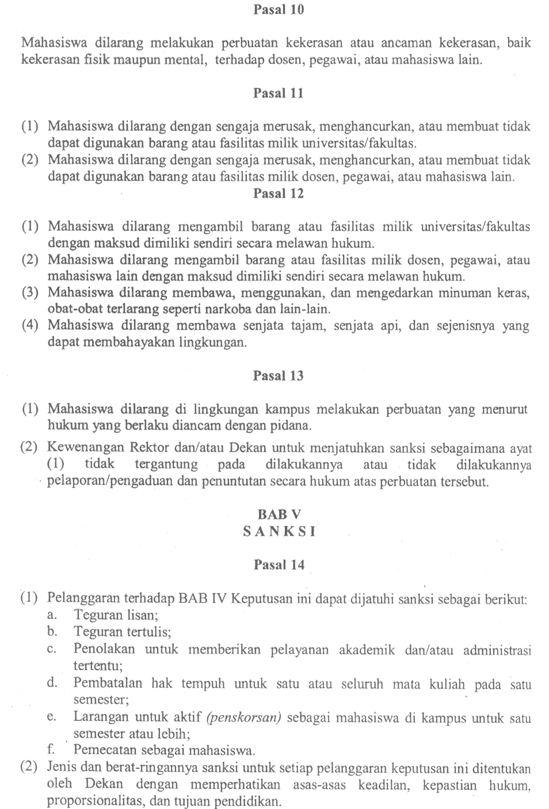
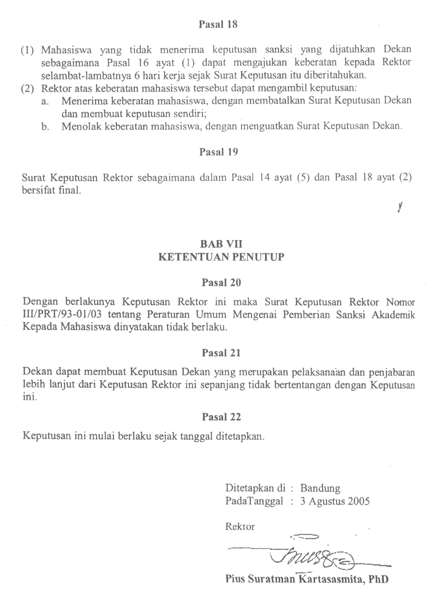

Evaluasi keberhasilan belajar yang diuraikan berikut ini berdasarkan kepada :
Evaluasi keberhasilan belajar mata kuliah adalah penilaian terhadap hasil belajar mahasiswa dalam suatu mata kuliah, yang dilakukan secara menyeluruh dan berkesinambungan dalam satu semester dengan cara yang sesuai dengan karakteristik mata kuliah yang bersangkutan.
Keberhasilan belajar mata kuliah ditetapkan segera setelah mahasiswa menyelesaikan seluruh Komponen Kegiatan yang disyaratkan dalam suatu mata kuliah. Kriteria keberhasilan belajar mahasiswa dalam suatu mata kuliah ditetapkan oleh dosen pembina mata kuliah, dengan menaati rambu-rambu dalam SK Rektor dan SK Dekan tersebut di atas.
Evaluasi keberhasilan belajar mata kuliah dilakukan terhadap hasil belajar mahasiswa dalam berbagai Bentuk Kegiatan, yang masing-masing memiliki Komponen Kegiatan dan Komponen Evaluasi sebagai berikut :
Berdasarkan pertimbangan akademik, Dekan dapat mengubah Komponen Evaluasi bagi suatu Bentuk Kegiatan seperti tersebut di atas, sejauh tidak bertentangan dengan peraturan perundang-undangan yang berlaku.
Keberhasilan belajar mahasiswa dalam suatu mata kuliah dinyatakan dengan Nilai Akhir (NA) berupa huruf A, B, C, D, dan E. Nilai Akhir A, B, C, dan D berarti lulus, sedangkan Nilai Akhir E berarti tidak lulus.
Apabila seorang mahasiswa tidak dapat memenuhi salah satu komponen evaluasi yang ditentukan dalam suatu mata kuliah, maka keberhasilan belajar mahasiswa untuk mata kuliah tersebut dapat dinyatakan Kosong (K) oleh Dekan. Jika keberhasilan belajar seorang mahasiswa untuk suatu mata kuliah adalah K, maka mata kuliah ini dianggap belum pernah ditempuh dan tidak diikutsertakan dalam perhitungan Indeks Prestasi.
Komponen Evaluasi dinyatakan dalam bentuk angka dengan rentang 0 – 100 dengan pembulatan angka pecahan hingga satuan terdekat, dengan ketentuan bilangan pecahan ≥ 0,5 dibulatkan menjadi 1 dan bilangan pecahan < 0,5 dibulatkan menjadi 0.
Konversi Angka Akhir (AA) menjadi Nilai Akhir (NA) dilakukan dengan Penilaian Acuan Patokan (PAP) sebagai berikut :
| AA | NA | Bobot NA |
|---|---|---|
| 80 – 100 | A | 4 |
| 70 – 79 | B | 3 |
| 60 – 69 | C | 2 |
| 50 – 59 | D | 1 |
| 0 – 49 | E | 0 |
Berdasarkan pertimbangan akademik, Dekan FTIS dapat memutuskan untuk melakukan konversi AA menjadi NA dalam suatu mata kuliah tertentu dengan Penilaian Acuan Normal (PAN).
Evaluasi keberhasilan belajar dilakukan secara berkesinambungan, sejak mahasiswa mulai masuk ke program studinya. Evaluasi ini terdiri atas:
Evaluasi keberhasilan belajar tiap semester dilakukan segera setelah mahasiswa menempuh UAS. Evaluasi Keberhasilan Belajar tiap semester ini dinyatakan dalam Indeks Prestasi Semester (IPS) yang mempunyai rentang 0,00 – 4,00 dan dihitung dengan rumus:
dengan (sks × bobot NA)i = perkalian jumlah sks dan bobot NA mata kuliah ke-i, n = jumlah mata kuliah. IPS digunakan untuk menetapkan beban kredit yang dapat ditempuh mahasiswa pada semester berikutnya.
Evaluasi Keberhasilan Belajar Tahap Pertama dilakukan pada akhir 2 (dua) tahun pertama, atau pada akhir masa studi terpakai selama 4 (empat) semester, terhitung sejak yang bersangkutan terdaftar sebagai mahasiswa UNPAR. Evaluasi Keberhasilan Belajar Tahap Pertama dinyatakan dalam Indeks Prestasi Tahap Pertama (IPT I), dengan rentang 0,00 – 4,00.
Persyaratan yang harus dipenuhi pada Evaluasi Keberhasilan Belajar Tahap Pertama adalah telah lulus minimal 30 SKS dan IPT I minimal 2,00. Dalam hal ini yang dimaksud dengan IPT I adalah Indeks Prestasi untuk 30 SKS terbaik. Jika persyaratan tersebut tidak terpenuhi, maka mahasiswa yang bersangkutan tidak diijinkan melanjutkan studi pada prodi yang sama di lingkungan UNPAR. Penetapan mahasiswa yang tidak diijinkan untuk melanjutkan studi dilakukan dengan surat keputusan Rektor.
Semester dimana mahasiswa diijinkan mengambil cuti studi tidak diperhitungkan dalam Evaluasi Keberhasilan Belajar Tahap Pertama.
Evaluasi Keberhasilan Belajar Tahap Kedua dilakukan pada akhir 4 (empat) tahun pertama, atau pada akhir masa studi terpakai selama 8 (delapan) semester terhitung sejak yang bersangkutan terdaftar sebagai mahasiswa UNPAR. Evaluasi Keberhasilan Belajar Tahap Kedua dinyatakan dalam Indeks Prestasi Tahap Kedua (IPT II), dengan rentang 0,00 – 4,00.
Persyaratan yang harus dipenuhi pada Evaluasi Keberhasilan Belajar Tahap Kedua adalah telah lulus minimal 75 SKS dan IPT II minimal 2,00. Dalam hal ini yang dimaksud dengan IPT II adalah Indeks Prestasi untuk 75SKS terbaik. Jika persyaratan di atas tidak terpenuhi, maka mahasiswa yang bersangkutan tidak diijinkan melanjutkan studi pada prodi terkait di lingkungan UNPAR. Penetapan mahasiswa yang tidak diijinkan untuk melanjutkan studi dilakukan dengan surat keputusan Rektor.
Semester dimana mahasiswa diijinkan mengambil cuti studi tidak diperhitungkan dalam Evaluasi Keberhasilan Belajar Tahap Kedua.
Evaluasi Keberhasilan Belajar Tahap Akhir dilakukan pada akhir masa studi maksimal mahasiswa program Sarjana di UNPAR, yaitu 7 (tujuh) tahun, atau pada akhir masa studi terpakai selama 14 (empat belas) semester terhitung sejak yang bersangkutan terdaftar sebagai mahasiswa UNPAR.
Evaluasi Keberhasilan Belajar Tahap Akhir dinyatakan dalam Indeks Prestasi Kumulatif (IPK), dengan rentang 0,00 – 4,00 yang dihitung dengan rumus
dengan (sks × bobot NA)i = perkalian jumlah sks dan bobot NA mata kuliah ke-i, n = jumlah mata kuliah. Mahasiswa dinyatakan lulus dari prodi terkait di lingkungan UNPAR setelah memenuhi persyaratan berikut :
Jika persyaratan di atas tidak terpenuhi, maka mahasiswa yang bersangkutan tidak diijinkan melanjutkan studi pada prodi terkait di lingkungan UNPAR. Penetapan mahasiswa yang tidak diijinkan untuk melanjutkan studi dilakukan dengan surat keputusan Rektor.
IPK dihitung dengan memperhatikan semua mata kuliah yang pernah ditempuh oleh mahasiswa, dan digunakan untuk menetapkan yudisium (sebutan) kelulusan, dengan ketentuan sebagai berikut:
| IPK | Yudisium |
|---|---|
| 2,00 – 2,75 | Memuaskan |
| 2,76 – 3,50 | Sangat Memuaskan |
| 3,51 – 4,00 | Dengan Pujian (masa studi terpakai ≤ 9 semester) |
| 3,51 – 4,00 | Sangat Memuaskan (masa studi terpakai > 9 semester) |
Berdasarkan Keputusan Rektor Universitas Katolik Parahyangan No. III/PRT/2011-08/148 tentang Standar Kemampuan Bahasa Inggris Mahasiswa Universitas Katolik Parahyangan, mulai mahasiswa angkatan 2006 dan selanjutnya, setiap mahasiswa program Sarjana dan Pascasarjana wajib memiliki kemampuan bahasa Inggris yang dinyatakan berdasarkan hasil tes di PBB (Pusat Pendidikan Berkelanjutan) UNPAR, atau pada lembaga penyelenggara tes resmi di luar UNPAR, dengan skor minimal sebagai berikut:
Untuk mahasiswa Program Sarjana, Skor TOEFL minimal atau skor IELTS minimal tersebut harus telah dicapai oleh mahasiswa yang bersangkutan selambat-lambatnya pada saat Evaluasi Studi Tahap II. Jika pada batas waktu tersebut seorang mahasiswa belum dapat memenuhi skor minimal yang disyaratkan, maka mahasiswa tersebut dapat mengajukan permohonan dispensasi kepada Rektor asalkan memenuhi persyaratan tertentu. Tentang dispensasi ini lebih lanjut diatur pada pasal 5 dari SK Rektor (lihat lampiran).
Jadwal Akademik Tahun Akademik 2014/2015
| Kegiatan | Semester Ganjil | Semester Genap |
|---|---|---|
| Perwalian dan FRS | Senin-Kamis, 21-24 Juli 2014 | Selasa-Jumat, 13-16 Jan. 2015 |
| Awal perkuliahan | Senin, 18 Agt. 2014 | Senin, 26 Jan. 2015 |
| PRS | Senin-Selasa, 1-2 Sep. 2014 | Senin-Selasa, 9-10 Feb. 2015 |
| UTS | Senin-Jumat, 6-18 Okt. 2014 | Senin-Jumat, 16-28 Mar. 2015 |
| Akhir perkuliahan | Sabtu, 6 Des. 2014 | Sabtu, 23 Mei 2015 |
| UAS | Senin-Jumat, 8-20 Des. 2014 | Senin-Jumat, 25 Mei-6 Juni 2015 |
| Pengumuman Nilai Akhir | Jumat, 9 Jan. 2015 | Senin, 24 Juni 2015 |
Jadwal Pembayaran Biaya Studi Tahun Akademik 2014/2015
| Tahap | Semester Ganjil | Semester Genap |
|---|---|---|
| Tahap 1 (BRP dan 10 SKS) | Kamis, 14 Juli 2014 | Jumat, 9 Jan. 2015 |
| Tahap 2 (Pelunasan SKS dan SAPR) | Senin, 29 Sept. 2014 | Senin, 9 Maret 2015 |
Sidang Sarjana dan Wisuda Tahun Akademik 2014/2015
| Periode | LIX | LX | LXI |
|---|---|---|---|
| Batas akhir pendaftaran Sidang Sarjana | Jumat, 26 Sept. 2014 | Jumat, 16 Jan. 2015 | Jumat, 12 Jun. 2015 |
| Sidang Sarjana | Jum’at, 3 Okt. 2014 | Jum’at, 23 Jan. 2015 | Jumat, 19 Jun. 2015 |
| Batas akhir pendaftaran wisuda | Senin, 6 Okt. 2014 | Senin, 2 Feb. 2015 | Kamis, 25 Jun. 2015 |
| Wisuda | Sabtu, 1 Nov. 2014 | Sabtu, 28 Feb. 2015 | Sabtu, 8 Agt. 2015 |












